Previous: The Lansdorp 2 Handed Backhand | 🏠 Famous Coaches Home | Next: The Lansdorp One-handed Backhand
The Lansdorp Forehand
Comprehensive unified tennis knowledge base — Fundamentals, Stroke Analysis, Reference Library, and more
The Lansdorp Forehand
Robert Lansdorp
The Grip
The foundation of the forehand is the grip. One of the biggest problems in American junior tennis is the poor foundation so many young players have because of their extreme grips.
Under the handle, extreme western grips are incredibly common in high level junior tennis. Kids have great success early in their careers because they can hit topspin and get a lot of balls in play. If the ball is high and not too fast, these kids actually look pretty good.
Pete Sampras hits through the ball with a classic forehand grip and perfect followthrough.
The limitations don't show up until later, in the older age divisions or when a good young player first tests himself in professional tennis. Now these same kids suddenly don't look so great. They have severe problems handling the pace in the pro game, especially when the ball is low and skidding.
But nobody talks about these problems. Kids hold the rackets with the extreme grip and think it's alright. Nobody stands up and says that teaching extreme western grips are actually ruining these kids.
Nobody explains to the parents that if you take your 8-year old to a coach who let's the kid hit with an extreme grip, you're already up the creek - you just won't know it for another 8 years. This is what I call the disaster of teaching methods in American junior tennis.
The great players in the history of the game (with very few exceptions) have always had the ability to hit through the ball - to drive the ball with topspin and to handle great pace.
Classical grips, the grips I taught players like Tracy Austin, Pete Sampras, and Lindsay Davenport, allow young players to handle the ball when it is hit hard and is skidding.
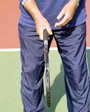
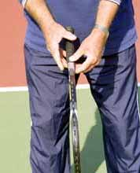
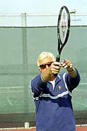
Eastern or Classic:The classic eastern grip shown with the hand closed and open. With the hand open, you can see how the grip places most of the palm behind the handle. The classic follow-through with this grip insures the player hits through the ball. This is the foundation for building the forehand
If another coach had gotten hold of Lindsay Davenport and started her with an extreme grip, Lindsay would not be where she is now. She would not be able to put the ball away like she does.
Of course, if a kid is very talented, he can have success with western grips, but it makes it so much more difficult. People point to Juan Carlos Ferraro. They argue that he's got an extreme grip and he's in the top 10 in the world. Maybe Ferraro is so strong he can put the ball away with his forehand, but it takes so much effort. How good would he be if he had learned to hit through the ball with a more classical grip?
There is no way to answer questions like these, but I wonder if some players who were close to the top - players like Jim Courier for example - might have had even more success if they had been given better basic foundations.
In this article I want to share my thoughts about how to build the foundation with the right grips. I also want to explain the critical relationship between the grip and the follow-through, something else that is rarely discussed in junior coaching.
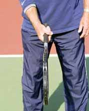
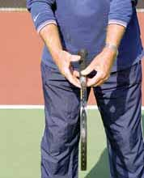
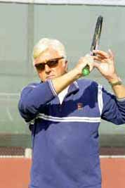
Semi Western:
After a young player has developed the ability to hit the ball, it's acceptable for his grip to slide slightly toward a western grip to develop more topspin, as shown here. Note the difference in the follow-through compared to the classic grip above.
The Follow-through
The follow-through is absolutely critical in developing the proper foundation. If the follow-through is in the right place, then you know the kid hit through the ball. This is something that is easy to see if you know what to look for.
I look at the beginning of the stroke, how the kid holds the racket, and I look at the end of the stroke, the follow-through. If the beginning is perfect and the end is perfect, I can guarantee the hit through the ball was perfect too.
If you are a parent or a coach you should do the same. The photos demonstrate the four most common grips and the follow-throughs they produce. From this any player or coach can recognize whether a player has a solid foundation, or if the grip is too extreme.
Look at how the player holds the racket, then ask him to open his hand. This will show you the exact position of the hand on the racket handle.
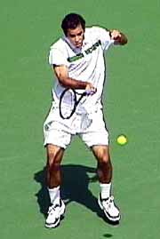
Hit through the ball: The racquet stays behind the ball and moves through the line of the shot before moving upward.
Watch the follow-through as he hits. You'll see the way the stroke finishes correlate with how the player holds the racket.
When I start young players, I treat them all as if they can become champions. I'm teaching them the grips that give them the foundation to become as good as they possibly can, maybe even a world champion.
Over the years, people who watched junior tennis would say they could tell which players were taking from me. It was obvious the way they hit through the ball.
Basically, there are two grips that will allow you to do this in the modern game, the eastern grip, similar to the grip used by Pete Sampras, or a moderate semi-western grip used by players like Agassi or Lindsay Davenport.
I strongly believe, however, that kids should start with the eastern grip. The beginning is the critical part.
You have to watch the kids very closely, because you know they will have a natural tendency to slip the grip, so the hand goes more under the handle.
A kid can eventually have some leeway in this respect but not until the fundamental ability to hit through the ball is established.
Once they have the feeling of hitting through the ball, you can slip the grip over toward a semi-western and get a little more topspin with no damage done. The kid already knows what it feels like to hit through the ball.
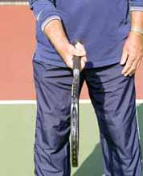
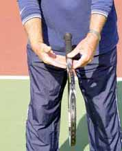
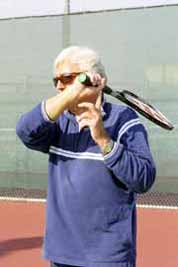
Extreme Under the HandleThe extreme under the handle grip and the extreme western followthrough, another common grip in high level junior tennis. Note the awkward followthrough. With the extreme grip, the player's ability to hit through the ball is even more limited.
If you start you child out right, half the battle is won. If you don't start kids out right, they have to be so exceptionally good to succeed.
If the kid gets comfortable with one of the extreme grips first, the damage is done. You've limited their potential, probably permanently. It's almost impossible to make them change without taking their forehand away and completely destroying their confidence.
In addition to the grip, the other critical element in building a good foundation is the follow-through. Just like the grip, the way the follow-through as taught is a huge problem in junior tennis. No one understands the real significance of follow-through.
The follow-through shows whether the player really hit through the ball. What's critical is how the ball comes off the racket, that the ball is solid off the racket.
You have to imagine that the ball doesn't leave the racket right away, that you keep the racket behind the ball. You have to feel the ball, you have drive through the ball. The follow-through shows whether a player is doing this or not.
Pete Sampras' Forehand-age 9.
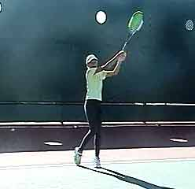
Maria Sharapova, age 13, one of the world's top young juniors, demonstrates how to check the follow-through by leaving the racket out front.
Note how the player holds the finish position so that the racquet stays on edge.
Today kids have extreme "wraps" at the finish. They bring the racket immediately up and around the neck. And this is considered good! Coaches teach it. In reality the extreme wrap guarantees the player won't hit through the ball. Instead, he pulls off the ball to wrap the finish, so the racket doesn't go out through the line of the shot. When you teach this big rap at the beginning players never get the feeling of staying with the shot.
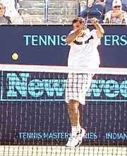
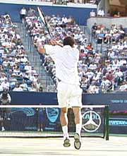
Two views of Pete Sampras' follow-through, with his hand coming all the way through the shot before the racket wraps over the shoulder.
If you really hit through the ball, the follow-through is with the arm up towards the chin. The racket is straight up and down, on edge, and slightly above the wrist. To see if the player is hitting through, I teach him or her to stop with the arm up and out. I have them "come out front" or "leave the racket out front." They aren't allowed to come around the neck. If they can "leave it out front," then I know they are hitting through the ball perfectly.
This is a teaching technique. It's a little stiff to do when playing. But in matches the follow-through still won't immediately wrap around the neck. Watch Pete for example. You'll see that, on his follow-through, he brings his hand close to his left cheek first. If a player has learned to hit through the ball at a young age the way Pete and Lindsay did then a longer follow-through won't affect the ability to do this.
In addition to the critical role of the grip and the follow-through, here are my views on some of the other issues in developing the forehand.
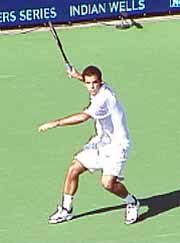
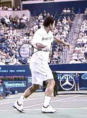
Pete demonstrates the ideal backswing, with the racket at about shoulder height.
Keep the racket face level and on edge, the same position as when hitting the ball.
The Backswing
With the follow-through, there's no choice, there's one way and that's it. On the backswing, you do have a choice. But I would prefer you bring the racket back about shoulder high. Keep your arm relaxed, and don't use a lot of wrist.
I believe you should make the stroke as long as possible. I'm completely against shortening the backswing too soon. It's very dangerous. You'll never learn how to drive the ball. It's a lot easier to shorten it up than to make it big. Don't start a kid out with short backswings, a kid will never learn how to swing.
Since the racket has to be level at the time you hit the ball, I don't see that it's worth all that much to close the racket face. If you get the racket face back in the position you are going to hit the ball, with the racket straight up and down or level, you're far better off. There is far less room for error.
Teach them how to return serve with a complete swing. Because at the beginning, the serves aren't hard. If you're solid off the ground, your return is good. If someone serves 130mph, then some players may have to consider shortening it up.
The Wrist
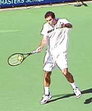
The wrist is laid back at contact. If you want to slap the ball, move to Spain and play on red clay.
The wrist has to be laid back at the hit. But you have to be very careful you don't lay your wrist back too far or you may end up slapping the ball. The wrist is moving slightly through the hit but it doesn't flop or whip.
Too much wrist is very dangerous. It has to be controlled. With extreme topspin the wrist can flop all over the place. I don't like all that rolling and turning unless you are going to move to Spain and play on the red clay.
If the wrist starts to slap, then the player doesn't have control and it becomes difficult to get the feel of hitting through the ball.
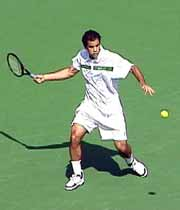
At the completion of the backswing, the racket drops slightly below the ball to hit through the shot with topspin.
Some coaches actually encourage this. They call it "spanking the ball." Spanking the ball? Give me a break!
They think players are getting extra topspin, but actually they are pulling off the ball. They are not driving through the ball with topspin, so you get a mediocre ball that sits up way too much. A player like Hingis has so much motion she cannot drive through the ball. Her ball sits, where as Lindsay's ball moves.
At the completion of the backswing, drop the racket slightly below the level of the ball, you'll hit with a little bit of topspin but the topspin isn't obvious. When Lindsay or Pete hit a forehand it's often described as a flat ball but it's not flat. They are hitting through the ball with topspin. But when you hit the ball harder, the way they do, you definitely hit it flatter.
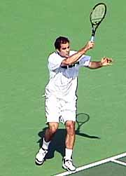
Develop a player with the closed stance. Sometimes you have to step into the ball even in pro tennis.
The Stance
I like to teach the closed stance at the start, and even go back to it at the later stages. With a closed off stance, you can hit through the ball better. With the open stance there's a danger that players are going to start wrapping around the body too quickly.
When you start a kid with an open stance, you're asking for trouble. Develop the closed stance and then go open stance, because when you are running wide for a forehand it should be some variation of the open stance - or at least a stance in which the player steps though with the front foot after the hit (for examples of open stance forehands see Reverse Forehand article). But players have to understand the difference. They have to understand there are times when it's better to step into the ball, even in pro tennis.

Robert Lansdorp is the legendary Southern California coach who has developed dozens of world class junior and professional players. Robert's players include 4 champions who have gone on to become number one in the world: Maria Sharapova, Pete Sampras, Lindsay Davenport, and Tracy Austin. In these articles, found exclusively on Tennisplayer, Robert share his views on what goes into the making of a champion, and how he developed the strokes of some of the best ball strikers in the history of tennis.
Source: tennisplayer.net archive — The Lansdorp Forehand.docx (John Yandell teaching library, 2002-2022). Extracted and rendered as HTML for Tennis Future Lab.